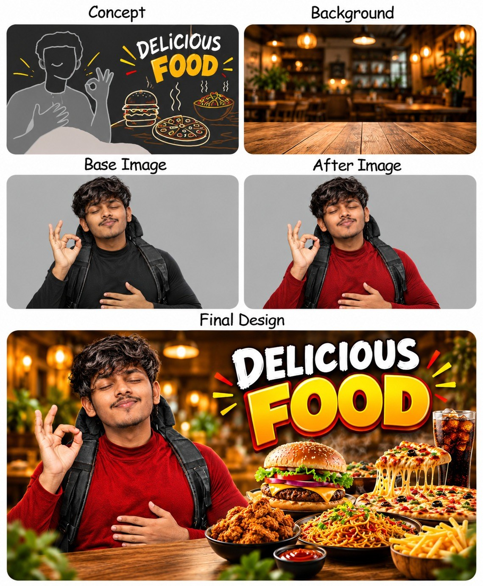

MUZAFIR / VIDEO & VISUAL DESIGN
Make every
frame matter.
Stories in motion. Visuals that stop the scroll.
Explore a collection of video and design work.



A selection of creative workVIDEO · THUMBNAILS · BRANDING
01 / IN MOTION
Video work.
Press play. See the work in motion.
02 / BEYOND THE FRAME
Visual design.
From the first impression to the final detail.
03 / THE CREATIVE FOCUS
Motion. Design.
A lasting impression.
I’m Muzafir. This portfolio brings together video samples, thumbnail concepts, brand identity explorations, and social campaign designs. Every piece is here to be explored—play the videos and open the visuals for a closer look.
Connect on GitHub ↗